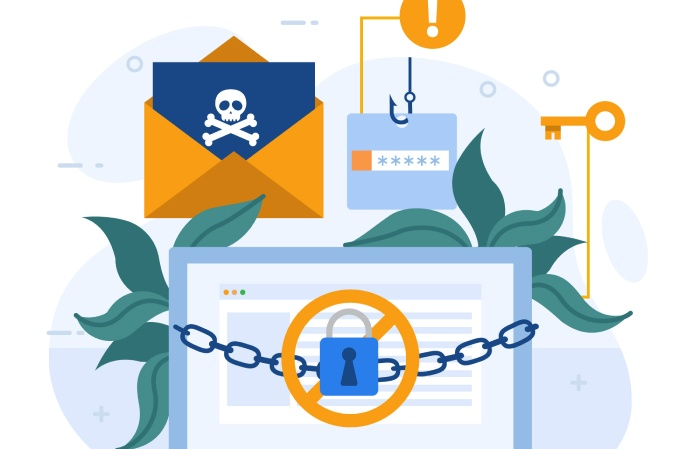

Email spoofing occurs when attackers impersonate legitimate email addresses or domains to send fraudulent messages. Because these emails can appear to come from trusted businesses, employees, or organizations, malicious activity may be hard to spot. Spoofing can contribute to phishing, financial fraud, data theft, and reputational damage. DMARC helps organizations protect their domains, but publishing a record alone is not enough. Regular DMARC checks help verify configuration, monitor authentication results, and uncover vulnerabilities. Reviewing DMARC records and reports can help businesses strengthen email security and prevent unauthorized senders from abusing their domains.
A DMARC check examines a domain’s DMARC DNS record to see whether it is configured correctly and provides the intended email protection. It reviews key settings, such as authentication requirements, reporting addresses, and enforcement policies.
DMARC works with SPF and DKIM to help verify that incoming messages come from authorized sources. It also checks domain alignment: whether the authenticated sending domain matches the domain shown in the email’s From address.
With a properly configured DMARC record, receiving mail servers can determine how to handle messages that fail authentication.
First, identify the domain you want to check. A DMARC record is stored as a TXT record in your domain’s DNS settings, using the hostname _dmarc. For example: _dmarc.example.com. Use a DNS lookup command or an online DMARC checker to find the record. If none appears, DMARC may not be configured for your domain.

After retrieving the record, review its syntax and settings. A standard DMARC record may look like this:
`v=DMARC1; p=none; rua=mailto:dmarc@example.com`
Check each component:
Confirm that the tags are formatted correctly and that reporting addresses are valid.
DMARC uses SPF and DKIM to help determine whether an email is legitimate, so reviewing both records is an important part of verification. SPF identifies the mail servers authorized to send email for your domain. DKIM uses cryptographic signatures to check a message’s authenticity and integrity. Passing SPF or DKIM alone isn’t enough for DMARC: at least one must pass and align with the visible From domain. Regularly review your SPF and DKIM configurations to spot unauthorized senders and authentication failures.
Your DMARC policy tells receiving servers how to handle email that fails authentication.
The three main options are:
Organizations should generally start with monitoring, identify their legitimate sending sources, and then move gradually to stronger enforcement. This helps reduce the risk of blocking legitimate business email by mistake.
DMARC aggregate reports show how receiving servers evaluate email authentication. They include sending IP addresses, message volumes, SPF and DKIM results, and policy evaluations. Reviewing the reports can help organizations spot unauthorized senders, misconfigured services, and possible spoofing attempts. A DMARC report analyzer can simplify XML processing and make the technical data easier to understand.
Online DMARC checkers make it easier to verify DNS records and spot configuration issues. Tools such as MXToolbox, EasyDMARC, and DMARCReport can help administrators review records, assess DMARC policies, and monitor authentication results. Depending on the platform, they may also flag missing records, syntax errors, incorrect tags, or policy weaknesses—and provide dashboards and alerts for ongoing email security monitoring.
During routine DMARC checks, look for missing or incorrectly published DMARC TXT records, invalid syntax or unsupported tag values, and incorrect aggregate reporting email addresses. Also verify that SPF records include only authorized sending sources, DKIM is configured correctly and signatures pass, and SPF and DKIM are aligned. Finally, review enforcement policies to ensure they aren’t so weak that spoofed emails can reach recipients. Catching these issues early helps prevent authentication failures and strengthen email security. Click here for further details.